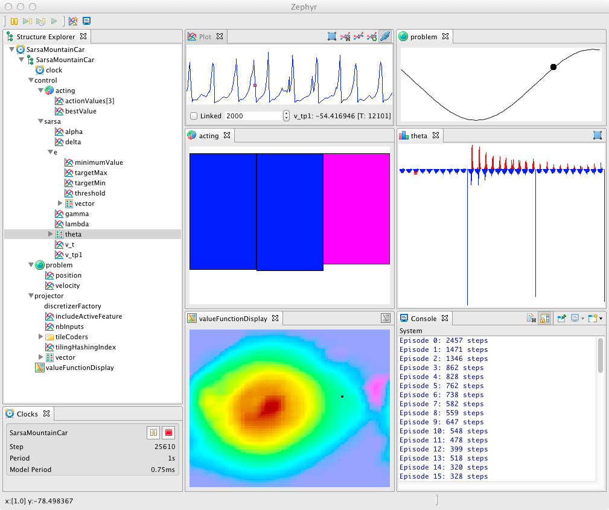
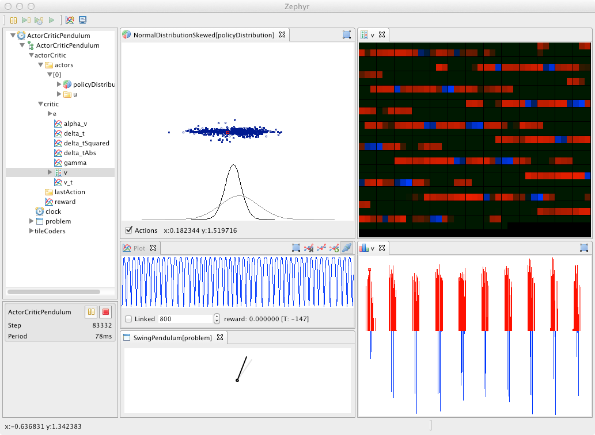
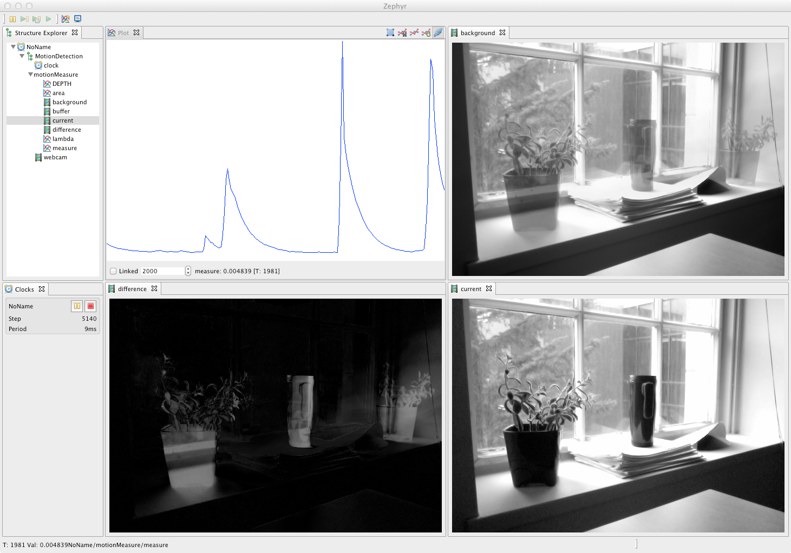
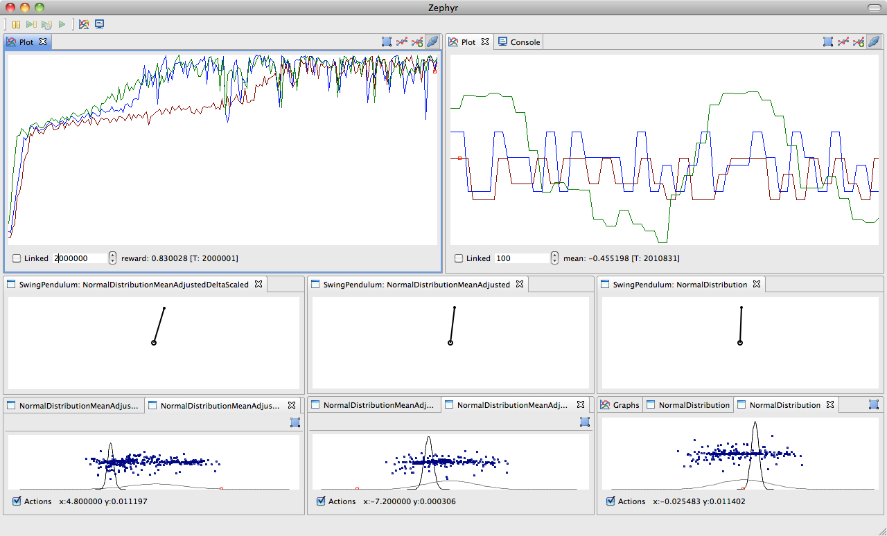
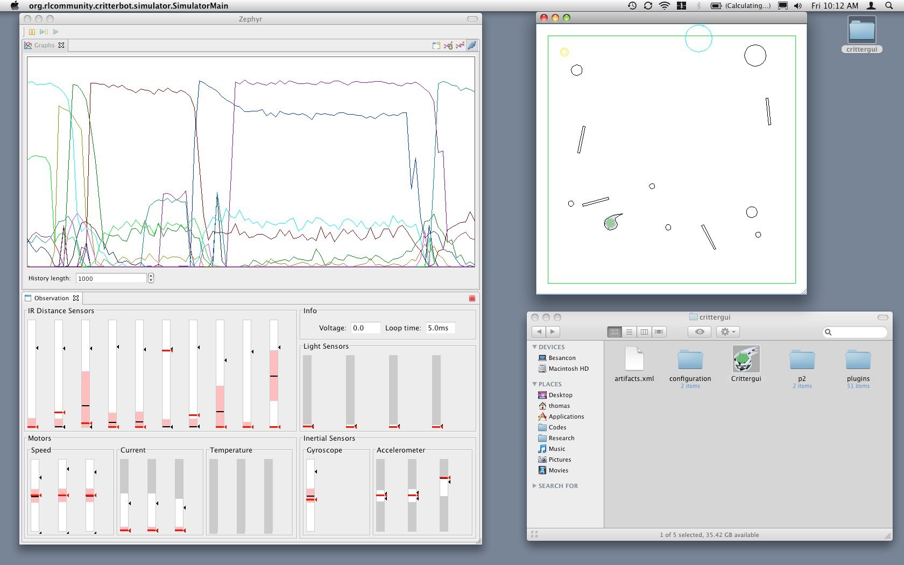

---
title: Video and Screenshot Gallery
layout: default
---
Video and Screenshot Gallery
Demo RLPark: mountain car with Sarsa
Demo RLPark: actor-critic with a Swing-up Pendulum
Demo RLPark: Off-policy Actor-Critic (Off-PAC) on a 2D continuous world
iRobot Create doing nexting
Mountain Car with Sarsa, including a display of the value function in 2D and a bar graph of the policy in the current state:

The swing pendulum demo with two views of the weights of the value function:

Javacv
displaying the different steps of background subtraction on a video:

The swing pendulum problem with different actor-critic algorithms:

The Critterbot's simulator:

More screenshots with Zephyr